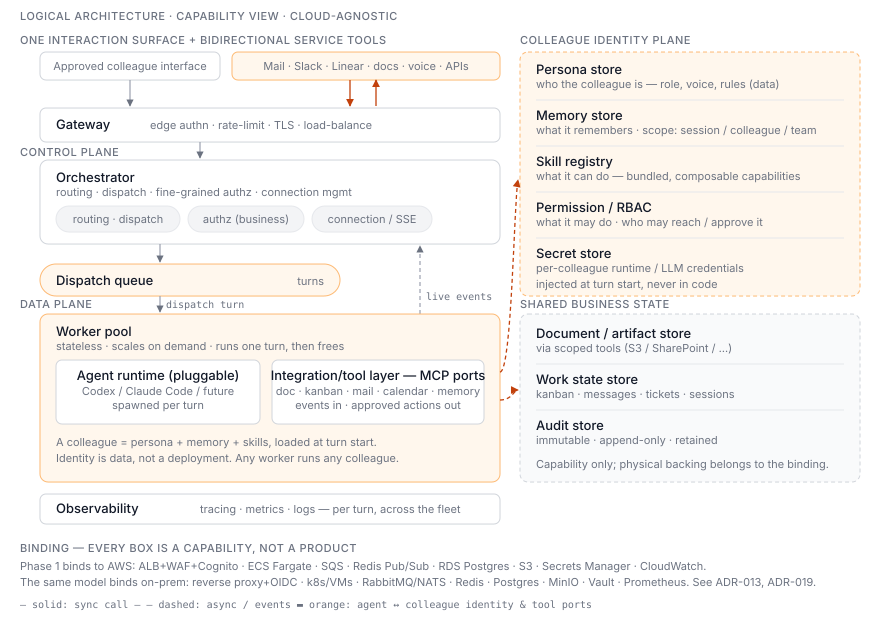

Logical architecture — the capability model

This is the cloud-agnostic view of the platform: components named by what they do (capabilities), not by which product implements them. It is the canonical model. Each phase and each environment is a binding of this model onto concrete technology — Phase 1 binds it to AWS; an on-prem deployment binds the same model to different products. Read this before any phase diagram, because the phase diagrams are concretizations of this.
Why this exists as a separate view (see ADR-013):
- No vendor lock (Non-negotiable #5) only means something if the architecture itself isn't written in AWS nouns. The capability model is the contract; AWS is one supplier.
- On-prem / VDI-bound teams (ADR-008) need the same system on different infrastructure. That's only possible if "the system" is defined by capability, not by managed service.
- Persona, memory, and skill are first-class here — a Colleague Identity Plane — not an afterthought hidden inside "some Postgres rows."
The capability components
Experience edge - Interaction surface — the single approved human-facing interface for a deployment. It carries the live conversational Turn contract; replacing the presentation does not create another colleague identity. - Gateway — edge authentication, rate-limiting, TLS, load-balancing. Coarse "can this request pass" — not business authorization.
Control plane - Orchestrator — routing, dispatch, fine-grained (business) authorization, and holding the client connection open. Does no LLM work and stores no authoritative state itself. - Dispatch queue — one-way hand-off of turns from orchestrator to workers. - Event / stream bus — carries live turn events back from a worker to the orchestrator task holding the client's connection (the streaming return path).
Execution · data plane
- Worker pool — stateless executors; each runs one turn then frees itself. Any worker runs
any colleague.
- Agent runtime — the per-turn LLM agent process (Codex / Claude Code / future). Pluggable;
this is the replaceable part, not the platform.
- Integration/tool layer (MCP ports) — doc / kanban / message /
memory / mail / calendar tools as a storage- and vendor-agnostic
interface. Each integration can accept service events and expose actions; the
interface is stable across phases while the backing changes.
This is the platform's main extension seam: adding a tool adds a capability a colleague can
use (e.g. calendar, search, email) without touching the orchestrator or worker; swapping a
tool's adapter changes where it's backed (e.g. doc → S3 or SharePoint, per
ADR-019). It runs inside each
worker per turn, so it scales with the worker pool — there is no separate service to scale.
Colleague identity plane (this is the part that makes a colleague a colleague) - Persona store — who the colleague is: role, voice, behavior rules. Data, not code. - Memory store — what it remembers across turns. Scoped: session / colleague / (later) team. - Skill registry — what it can do: bundled, composable capabilities. - Permission / RBAC — what it may do, and who may reach or approve it. - Secret store — per-colleague runtime/LLM credentials, injected at turn start, never in code.
Where does this state physically live? Deliberately not shown on this diagram — each box above is a storage capability, and where it physically lives is the binding (the table below), not the logical model. That's why the Phase 1 diagram looks more concrete: it is the binding. In Phase 1 (AWS): persona files → S3; structured memory + skill registry + RBAC → Postgres; large memory/skill artifacts → S3; credentials → Secrets Manager. Swap the binding column and the same capabilities live on Postgres / MinIO / Vault on-prem.
Shared business state - Document / artifact store — the actual business content, reached through permission-scoped integrations/tools (ADR-019). - Work state store — kanban, messages, tickets, sessions. - Audit store — immutable, append-only, retained (ADR-006).
Cross-cutting - Observability — tracing, metrics, logs per turn and across the fleet.
Bindings
Each capability maps to a concrete product per environment. Phase 1 is the AWS binding; the on-prem column shows the same model is implementable without AWS.
| Capability | Phase 1 (AWS) | On-prem option |
|---|---|---|
| Gateway | ALB + WAF + Cognito | reverse proxy (nginx/Envoy) + OIDC (Keycloak) |
| Orchestrator / Worker pool | ECS Fargate | Kubernetes or VMs |
| Dispatch queue | SQS | RabbitMQ / NATS |
| Event / stream bus | ElastiCache Redis Pub/Sub | Redis / NATS |
| Persona store (AGENTS.md / Soul.md) | S3 (versioned files) | MinIO |
| Memory store | Postgres (structured) + S3 (artifacts) | Postgres + MinIO |
| Skill registry | Postgres (registry) + S3 (bundles) | Postgres + MinIO |
| Permission / RBAC | RDS Postgres | Postgres |
| Secret store | Secrets Manager + KMS | Vault |
| Document / work state | S3 + RDS Postgres (+ connectors) | MinIO + Postgres |
| Audit store | S3 Object Lock + CloudTrail | WORM storage + append-only Postgres |
| Observability | CloudWatch + OpenTelemetry | Prometheus + Grafana + OpenTelemetry |
| Agent runtime | Codex / Claude Code | Codex / Claude Code (same) |
The only place the binding is non-trivial is the queue and event bus — SQS and Redis have no drop-in on-prem identity, so the orchestrator talks to them through a thin port (an interface), and "SQS vs RabbitMQ" becomes a binding detail, not an architecture change. Everything else is a near-direct substitution.